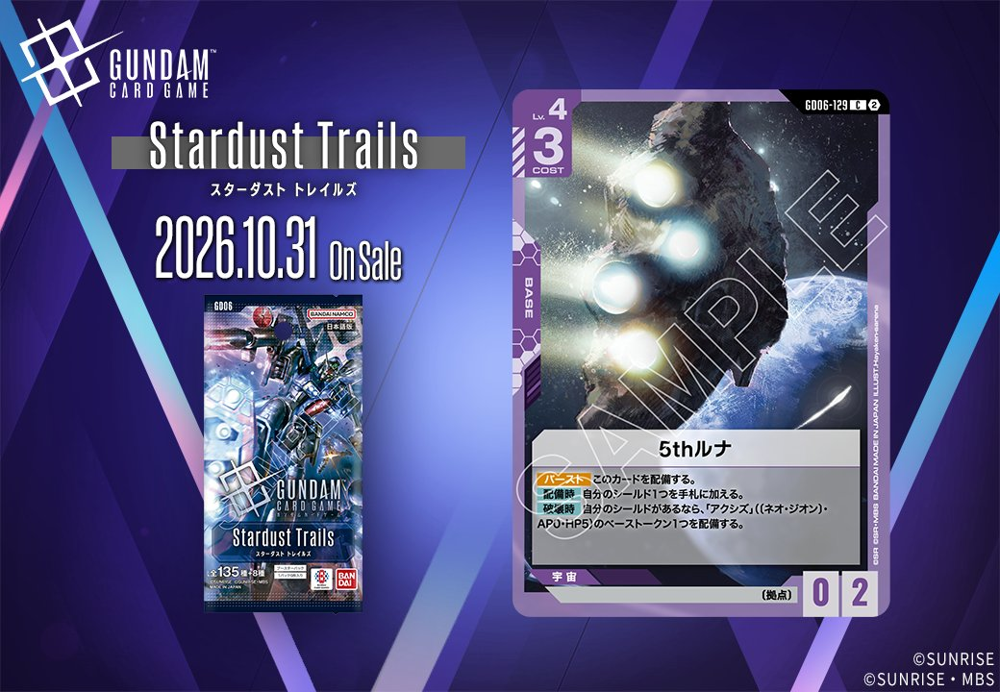
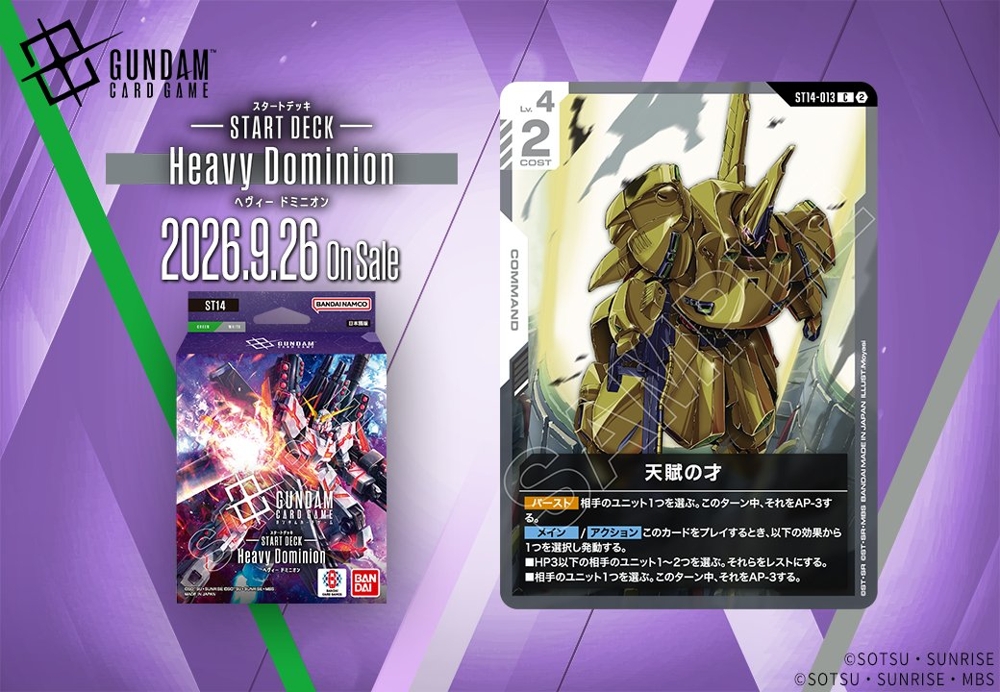

今回は2枚のカードを紹介します。1枚目は「Stardust Trails(スターダスト トレイルズ)」(GD06)収録の紫のBASE「5thルナ」(GD06-129)で、2026年10月31日発売です。2枚目は「ST14」収録の白のCOMMAND「天賦の才」(ST14-013)で、2026年9月26日発売となります。

5thルナ (GD06-129)
| 色 | 紫 | タイプ | BASE |
| Lv | 4 | コスト | 3 |
| AP | 0 | HP | 2 |
| 特徴 | 〔拠点〕 | ||
効果: 【バースト】このカードを配備する。【配備時】自分のシールド1つを手札に加える。【破壊時】自分のシールドがあるなら、「アクシズ」(〔ネオ・ジオン〕・AP0・HP5)のベーストークン1つを配備する。
5thルナ(GD06-129)は【バースト】で自ら配備でき、【配備時】に自分のシールド1つを手札に加えるCOST3・HP2のベース。加えて【破壊時】に自分のシールドがあれば「アクシズ」(AP0・HP5)のベーストークンを配備でき、破壊されても後続の壁を残せる点が特徴です。 既存のアクシズ(GD05-129)も【配備時】に同じくシールドを手札へ加えるため、拠点を並べながらシールドを手札リソースへ変換する動きと噛み合います。2026-10-31発売。

天賦の才 (ST14-013)
| 色 | 白 | タイプ | COMMAND |
| Lv | 4 | コスト | 2 |
効果: 【バースト】相手のユニット1つを選ぶ。このターン中、それをAP-3する。メイン/アクション このカードをプレイするとき、以下の効果から1つを選択し発動する。■HP3以下の相手のユニット1〜2つを選ぶ。それらをレストにする。■相手のユニット1つを選ぶ。このターン中、それをAP-3する。
天賦の才(ST14-013)はコスト2の白コマンドで、プレイ時に「HP3以下の相手ユニット1〜2つをレストにする」か「相手ユニット1つをAP-3する」を選べる柔軟性が持ち味です。前者は複数体を同時にレスト化して攻めやアタックを鈍らせ、後者はブロッカー含む厄介なユニットの戦闘力を一時的に削れます。【バースト】でもAP-3を撃てるため、シールドから捲れても最低限の仕事をこなせる一枚で、2026-09-26発売のST14で採用を検討できます。
関連カード
-
 アクシズ(GD05-129)紫系デッキ内採用率4% (178デッキ)
アクシズ(GD05-129)紫系デッキ内採用率4% (178デッキ) -
アーモリーワン(GD04-128)紫系デッキ内採用率0.7% (31デッキ)
-
 ガンダム・バルバトスアダプト(GD03-056)紫系デッキ内採用率36.8% (1650デッキ)
ガンダム・バルバトスアダプト(GD03-056)紫系デッキ内採用率36.8% (1650デッキ) -
 三日月・オーガス(ST05-010)紫系デッキ内採用率36.7% (1645デッキ)
三日月・オーガス(ST05-010)紫系デッキ内採用率36.7% (1645デッキ) -
 ガンダム・バルバトス（第1形態）(GD02-054)紫系デッキ内採用率35.6% (1594デッキ)
ガンダム・バルバトス（第1形態）(GD02-054)紫系デッキ内採用率35.6% (1594デッキ) -
 溢れる慈愛(GD01-118)白系デッキ内採用率38.5% (1724デッキ)
溢れる慈愛(GD01-118)白系デッキ内採用率38.5% (1724デッキ) -
 ガンダム・ルブリス(GD01-086)白系デッキ内採用率33.6% (1505デッキ)
ガンダム・ルブリス(GD01-086)白系デッキ内採用率33.6% (1505デッキ) -
 エールストライクガンダム(ST04-001)白系デッキ内採用率31.7% (1420デッキ)
エールストライクガンダム(ST04-001)白系デッキ内採用率31.7% (1420デッキ) -
 キラ・ヤマト(ST04-010)白系デッキ内採用率31.4% (1407デッキ)
キラ・ヤマト(ST04-010)白系デッキ内採用率31.4% (1407デッキ) -
 リック・ディアス(GD02-079)白系デッキ内採用率27% (1211デッキ)
リック・ディアス(GD02-079)白系デッキ内採用率27% (1211デッキ)